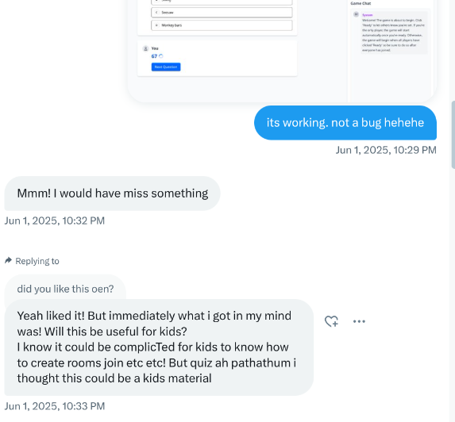
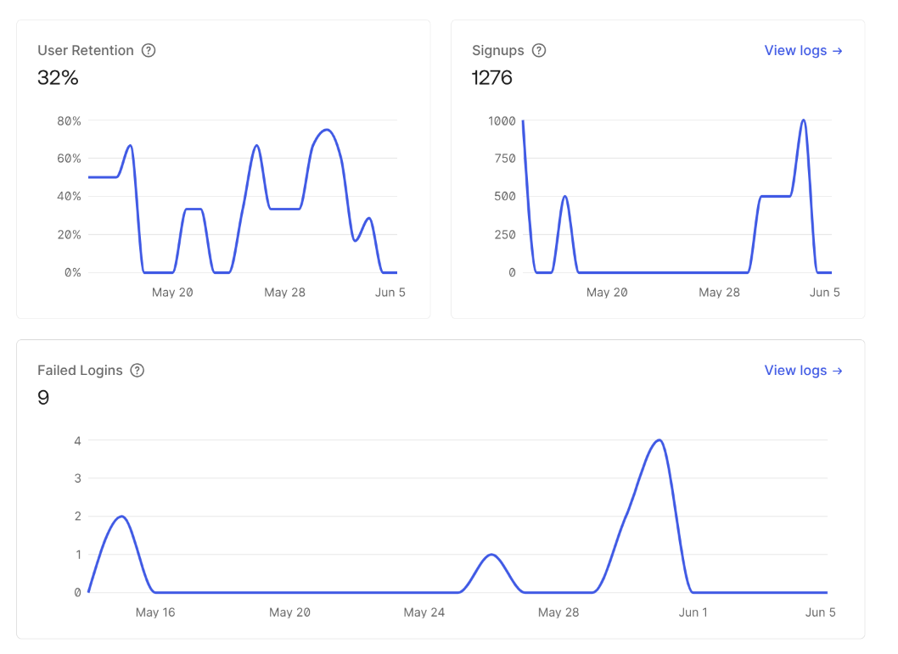

thisisvoid.in
thisisvoid.in
Don’t over engineer. No one is going to use your product!
How many times have you heard this phrase “Don’t over engineer. You don’t have audience so no one will use your product apart from your first circle” from people around you.
It sucks but most of the time that’s the reality. So what can we do about it? Iterate fast and build something small that a maximum of 10 use it? You see this pattern very common among products vibe coders build and display. Not all but largely. All they want is things to work and once it works they push it out just to show how quickly they can iterate and build. But what if it suddenly blows up? Is your code structured in the right way so that it can be seamlessly expanded at least to a certain extent?
Okay enough preface. I wanted to set context before going on to explain what happened to my small tiny little game and how me being ambitious saved me and my pocket from embarrassment.
I spent a large portion of May building my multiplayer quiz battle royal game. Which is a very simple game where you compete with your friends or with a bunch of bots on whatever quiz topic you want. It works like a real-time multiplayer with real-time chats, leaderboard, sync engine to make sure every player as well as bots are in same level and a bunch of usual quiz stuff like analytics etc.
I took it up as a challenge for me to learn and experiment how effective Golang is in handling WebSockets and as a backend guy how intuitively I can build UI with just HTML, Tailwind and a lot of JavaScript.
I built this and did a bunch of load testing despite knowing that I won’t market it anywhere. I did that just to make sure I deep dive and understand how Locust works.
This game’s heart is an AI component which at first I directly used Gemini 2.5 Pro. Google has Gemini package for Golang and I wrote a wrapper around it for my use case to access quiz data. Later I got to know about OpenRouter and I had this hunch that OpenRouter would be a better alternative than directly accessing the model (I was right about it).
I did all my required testing, pushed to prod and sent it to my man mani anna to try it out. He gave me a feedback which I never thought of. He told me that this game might be more suitable for kids to play.

- At that time I didn’t care much. Then I sent it to my mom to play with me. We played a couple of games with the bots, she liked it and forget the game but she didn’t actually believe that I am decent enough to build an actual working website xd
- few days passed. Suddenly I get a Grafana alert. I used a extremely small machine. You don’t add pager duties to personal projects but again I wanted to explore Grafana Cloud and Node Exporters especially how quickly I can set it up. Most of these alerting tools are free for a user or two. If there was no Grafana I would have got a hefty bill or in the worst case the whole application could have crashed.
- I didn’t know who is playing. Again thanks to my extensive logging which you don’t usually do in pet projects, I was quickly able to see traffic from the same IP address. This usually means that you are under some kind of DoS attack. But I am nobody to DoS plus I saw majority of the initial requests had played a game completely till the end which is enough evidence for me to say it has found its own audience.
 After the initial small peak, it blew up 3x on the next consecutive week in mid-June
- The main thing I was worried about here is the LLM cost and app shouldn’t crash. Assume 5000* 5 bots each and so on, aprox half a mil requests easily for just a very very small bunch of users.
- I was stupid that I went ahead to prod with Gemini 2.5 Pro. Just because I was using OpenRouter I saved myself from a huge bill by swapping it with DeepSeek R1, Sarvam, and if none of the free ones available then Gemini Flash. This could never be possible if I used Gemini API directly.
- The one big mistake I did lethargically here is using env’s because who cares. My use case is straight forward no one will login into my system so I injected env through Ansible Vault which is AES encrypted. Usually in a decently monetizable project I would have used AWS Secret Manager or HashiCorp Vault without even thinking twice. The mental peace and the flexibility is way more than the cost I would spend. But here is the main problem with env: You see a spike and now if I need to swap from Gemini to something else I can’t swap API key because the key is loaded into the environment. So I need to restart it. If you are remotely into optimizing reads and writes you would have guessed how I made sure things are fast. i.e. lots of caches. So if I restart abruptly the game experience would be completely spoiled and the game won’t work as it meant to. OpenRouter saved me because all I need to do is just change OpenRouter settings not the key. Same could have been done if I used some sort of secret manager. Luckily I had no problems with them this time.
- Oops I completely went out of track. I did go and investigate who were the users. They were all school kids just like Mani predicted. My mom sent it to her friend, she forwarded it and it reached a primary school ICT teacher and just for students to have fun and learn she made them play and they told their friends and on and on….
- Even I knew at max 5 would play the game but I still optimized which I would have never done if my focus was to build for just 5.
- I added extensive logging
- Load tested
- Telemetry
- OpenRouter to manage cost
- Caching
- I even optimized LLM cost by saving similar topics once the quiz is over and giving the question to others if the same topic is requested.
- I added extensive logging
- I did all these not because I anticipated it, it’s because I wanna improve and the probability of something breaking is higher when a lot of users use so does the learning in making sure things don’t break. I would never improve if I don’t start building for imaginary moderate scale despite I might or might not have a large userbase.
- I hope you liked this one. I haven’t built anything in the past month as I am going through a very rough phase now. Share your experiences in my DMs so that I can learn from you guys. Until then byeee.